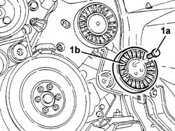

1092G40 Engine components single belt cam TENSIONER - R.R.
- Path
- Procedures > 10 ENGINE > 1092 engine component miscellaneous drives > 1092G single drive belt for various engine components > 1092G40 Engine components single belt cam TENSIONER - R.R.
- Kind
- repair procedure (removal / refitting; the operation number is the code)
- Applies to
- engines: 2.4 JTD 10V; all production periods
- Interactive page
- https://sloeber94.github.io/elrnDB-lThss/en/#/104843
Applies to: engines: 2.4 JTD 10V; all production periods
 Removing
Removing
 Refitting
Refitting- Position the vehicle on a lift.
See in Op. 7040D50 ENGINE COMPARTMENT UPPER SOUND INSULATION SHIELD - R.R.
See in Op. 7055B54 PROTECTION/GUARD under engine - R.R.
See in Op. 4450B04 Right FRONT WHEEL (one) - R.R.
See in Op. 7055B42 FRONT WHEEL ARCH LINER (one), left or right - R.R.
See in Op. 7055B64 Engine compartment DUST SEAL in front wheel arch (one), left or right - R.R.
See in Op. 1092G10 Engine components single drive BELT - R.R.
1. Undo the fixing bolt (1a) and remove the drive belt cam tensioner (1b).

Applies to: engines: 2.4 JTD 10V; all production periods
Refitting
Removing- Fit the auxiliary shaft drive belt cam tensioner.
- Tighten the bolt retaining the cam tensioner.
See in Op. 1092G10 Engine components single drive BELT - R.R.
See in Op. 7055B42 FRONT WHEEL ARCH LINER (one), left or right - R.R.
See in Op. 4450B04 Right FRONT WHEEL (one) - R.R.
See in Op. 7055B54 PROTECTION/GUARD under engine - R.R.
See in Op. 7055B64 Engine compartment DUST SEAL in front wheel arch (one), left or right - R.R.
See in Op. 7040D50 ENGINE COMPARTMENT UPPER SOUND INSULATION SHIELD - R.R.
- Remove the vehicle from the lift.
Topics linked from this page (6)
- 1092G10 Engine components single drive BELT - R.R.
- 4450B04 Right FRONT WHEEL (one) - R.R.
- 7040D50 ENGINE COMPARTMENT UPPER SOUND INSULATION SHIELD - R.R.
- 7055B42 FRONT WHEEL ARCH LINER (one), left or right - R.R.
- 7055B54 PROTECTION/GUARD under engine - R.R.
- 7055B64 Engine compartment DUST SEAL in front wheel arch (one), left or right - R.R.